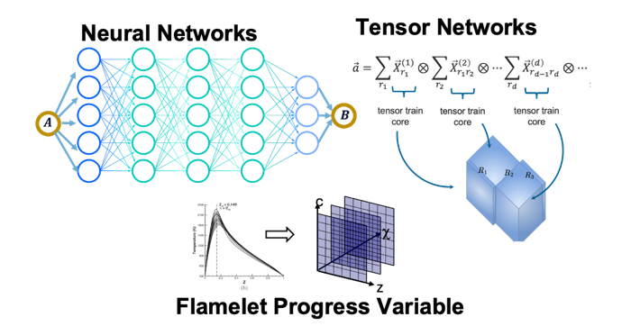

High-Speed Propulsion
Ramjets, scramjets, rotating detonation engines, oblique detonation engines, inlet and combustor coupling, shock-boundary-layer interactions, and propulsion subsystem interactions.

Carnegie Mellon University • Mechanical Engineering
High-fidelity simulations of fluid dynamics in energy-conversion processes.
The research laboratory lead by director Ryan F. Johnson, Associate Professor, Department of Mechanical Engineering, Carnegie Mellon University.
Our research
Ramjets, scramjets, rotating detonation engines, oblique detonation engines, inlet and combustor coupling, shock-boundary-layer interactions, and propulsion subsystem interactions.
Detonation structure, shock-reaction coupling, chemically reacting flow, solid-fuel pyrolysis, supercritical injection, fuel mixing, and material interfaces.
High-order CFD, finite-volume and DG methods, unstructured grids, robust conservative schemes, positivity preservation, entropy stability, and GPU-scalable solvers.

Reduced and mixed precision, computational chemistry acceleration, multifidelity models, machine learning, tensor-network compression, and optimization workflows.

Featured research
Fuel-air mixing, shock/jet interaction, and penetration dynamics for transverse injection into high-speed crossflow.
Read moreShock-reaction coupling, reflected-wave stabilization, and the physics of transient detonation structures.
Read moreAnnular flow, propagation modes, thermodynamic coupling, and engine-level performance prediction.
Read morePyrolysis, surface regression, flame structures, and coupled boundary-layer and diffusion processes.
Read moreReal-fluid thermodynamics and transcritical mixing in high-pressure energy-conversion devices.
Read moreHigh-order methods for conservative, positivity-preserving, entropy-bounded simulation of compressible reacting flow.
Read moreStrut-injector mixing, shock structures, and fuel-air distribution in high-speed combustor flowpaths.
Read moreSelected publications
People
Director
PhD Student
PhD Student
PhD Student
PhD Student